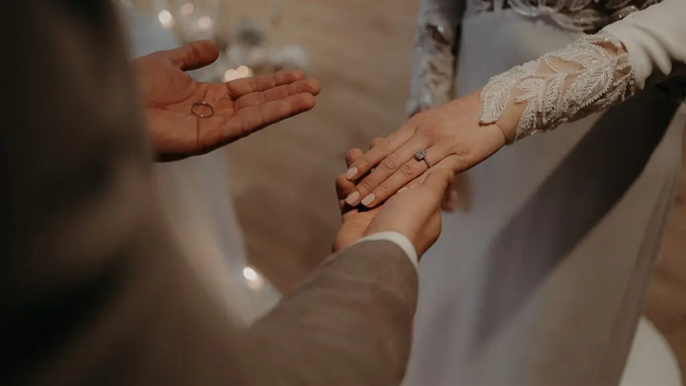
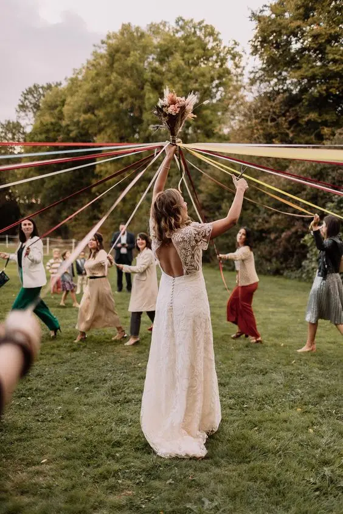
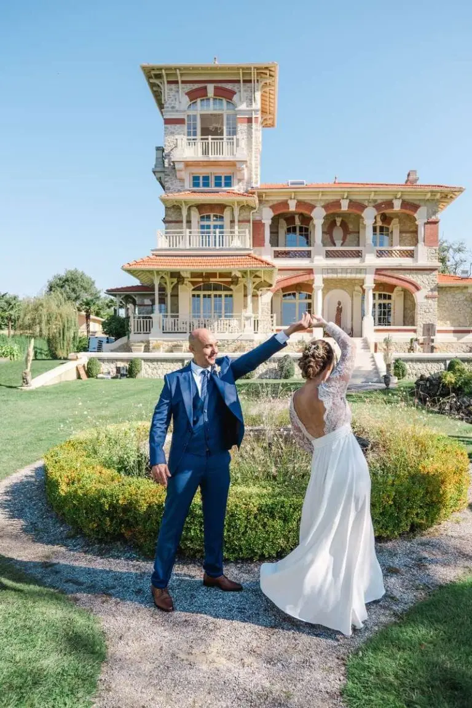
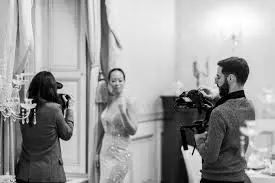
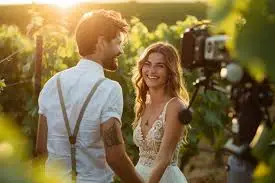
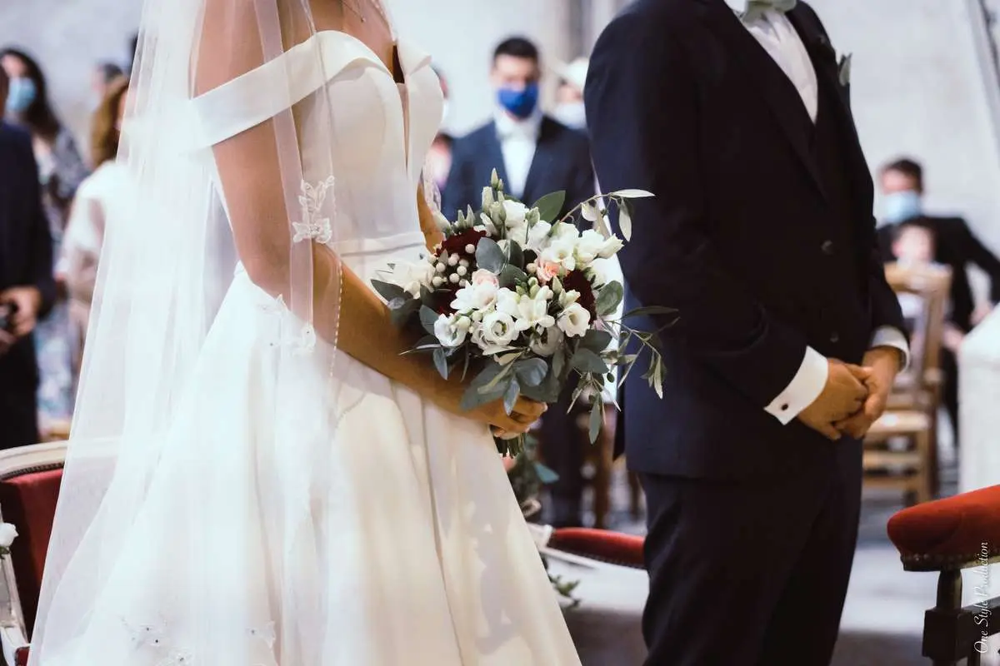
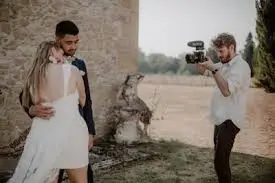
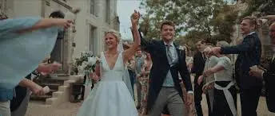

A wedding is one of the most important and emotional events in a couple's life. It is a day full of magical moments, laughter, tears of joy and unforgettable memories. To capture these precious moments, many couples now choose to hire professional videographers. Unlike photographs, which freeze moments in time, wedding videos offer a dynamic, complete view of the day, letting the couple relive every detail of their celebration.
Why do wedding videographers matter?
Creating living memories
Wedding videos let you relive the most precious moments of your special day with a depth and richness of emotion that photos can't match. While photos capture frozen instants, videos record the whole event, from the morning preparations to the evening festivities, including the vows and the moving speeches. This living, dynamic dimension gives your memories a new life, letting the couple relive not only what they saw, but also what they heard and felt.
Capturing the details
Professional videographers are experts in the art of capturing the small details that make every wedding unique. From the looks exchanged by the couple to the smiles of the guests, the parents' tears of joy and friends' bursts of laughter, these precious moments are preserved on video. These details add emotional depth to your memories, making every viewing of your wedding video an emotional, immersive experience.
Pure emotion
Emotions are at the heart of every wedding. A wedding videographer captures these raw, spontaneous emotions with an authenticity that only moving images can convey. Whether it is the moved look on one partner's face on seeing their future spouse for the first time, the parents' tears of joy or the bursts of laughter during the speeches, these moments are precious and deserve to be preserved. Videos let you relive them again and again, with the same emotional intensity as on the day itself.
Spontaneous moments
Videographers are also gifted at catching the spontaneous moments that happen throughout the day. Whether it is a child playing innocently, a guest making an impromptu speech or an unexpected dance, these unplanned moments add character and joy to your wedding video. These spontaneous instants are often the ones that bring the biggest smiles when you watch it again.
What are the advantages of a wedding video?

A complete perspective
While a photographer focuses on key moments and specific poses, a videographer captures the whole event. From the morning preparations to the evening party, every moment is recorded, offering a complete perspective on the day. This holistic approach ensures that even the small, often forgotten details are preserved.
The whole day
A wedding video documents the entire day, from the couple's preparations to the end of the evening. This includes not only key moments such as the ceremony and the speeches, but also the little moments in between, such as informal chats between guests, behind-the-scenes preparations and moments of calm and reflection. This complete record of the day lets you relive every aspect of the wedding, offering an overall picture of the event.

Easy to share
In our digital age, sharing memories is easier than ever. A wedding video can be shared with friends and family via social media, video-sharing platforms or even DVDs or USB sticks. For those who couldn't attend the ceremony, a video offers a chance to experience the event almost as if they had been there.
Accessibility and sharing
Online platforms such as YouTube, Vimeo and social media make it easy to share your wedding video with a wide audience. You can also send digital copies to your loved ones, which is particularly useful for those who couldn't attend the celebration in person. Sharing the video extends the joy of the wedding and lets you share it with the people who matter most to you.


A lasting keepsake
A wedding video is a lasting keepsake that can be enjoyed for years to come. Unlike memories that fade with time, a video lets you relive special moments as vividly as the day they were captured. It becomes a precious family archive, to watch on anniversaries or at family gatherings, and to pass on to future generations.
A family heirloom
A wedding video doesn't just document a special day; it becomes a family heirloom. Your children, grandchildren and future generations will be able to watch the video and feel connected to their family history. It is a timeless treasure that preserves not only the images and sounds, but also the essence of who you were at that moment.

How do you choose the right wedding videographer?
Look for experienced professionals
Choosing a wedding videographer shouldn't be done lightly. It is essential to look for experienced professionals with a solid portfolio and positive references. Take the time to watch several of their previous videos to make sure their style matches your expectations. Wedding videographers can have very different styles, from documentary to cinematic, so it is crucial to find the one who will tell your story in the most authentic way.

Videography styles
Wedding videographers can adopt different styles, each offering a unique perspective on your special day. Some prefer a documentary style, capturing events as they unfold naturally and spontaneously. Others opt for a cinematic style, with carefully composed shots, artistic camera movements and a structured narrative. It is important to choose a videographer whose style resonates with your vision of the wedding.
Check reviews and recommendations
Reviews and recommendations from other couples can be extremely helpful in your search. Don't hesitate to read testimonials online and ask friends or family for recommendations. A videographer with many positive reviews and personal recommendations is generally a good sign of reliability and skill.


Testimonials and samples
As well as reading reviews, ask to see samples of previous work. Professional videographers should be able to provide extracts of their previous videos. This will give you a better idea of their style, the quality of their work and their ability to capture important moments.
Meeting and communication
Before finalising your choice, meet the videographer in person or arrange a video call. This meeting is a chance to discuss your expectations and preferences, and to make sure you are comfortable with the person who will be by your side throughout this special day. Good communication is essential to ensure the videographer fully understands your wishes and can carry them out effectively.
Questions to ask
When you meet the videographer, ask about their working process, their equipment and their availability on the wedding day. Discuss your expectations and any specific moments you want captured. Clear communication from the start ensures everyone is on the same page and helps avoid misunderstandings on the day.
My little tips for a successful wedding video!

Plan the key moments
Discuss with your videographer the key moments you absolutely want in the video. These may include the ceremony, the vows, the speeches, the first dance and other special moments. Good planning lets the videographer prepare and be ready to capture these moments without missing them.

Timing and coordination
Make sure your videographer knows the timing of every important event. Coordinate with your wedding planner and the other suppliers to make sure everything runs smoothly. The better prepared your videographer is, the more precisely they will capture each key moment.

Be natural
It is important to stay natural and relaxed in front of the camera. The best wedding videos are those where the couple and the guests are themselves, without trying to play a role. Trust your videographer to capture authentic moments and don't worry too much about the camera.
Feeling comfortable on camera
If you aren't used to being filmed, take the time to relax and get used to the presence of the camera. Talk to your videographer about your concerns and listen to their advice on staying natural. The more at ease you are, the more authentic and moving the footage will be.

Prepare the venues
Make sure your wedding venues are well prepared for filming. Good light and a well-organised environment can make a huge difference to the quality of the video. Discuss the best angles and viewpoints with your videographer.
Optimising the lighting
Lighting is a crucial element of video quality. Work with your videographer and your wedding planner to optimise the lighting of the venues. Indoors or outdoors, good lighting will bring out the details and emotions captured by the camera.

Including personal elements
To make your wedding video unique, think about including personal elements and special touches. These might include recorded messages from loved ones, shots of places that are meaningful to you both, or special activities planned for the wedding day.

Creativity and personalisation
Discuss with your videographer how to personalise your video. Whether through specific music, drone footage or interviews with your guests, these personal touches will make your video even more special and representative of you as a couple.

In short, wedding videographers play an essential role in creating lasting, living memories. They bring a unique dimension by capturing not only images, but also the sounds and emotions that make every wedding a unique, memorable event. By choosing the right professional and carefully planning your day, you can be sure your wedding video will be a treasure you cherish for years to come. Photos are precious, but a video lets you relive your wedding again and again, with a smile on your face and a heart full of joy. With a wedding video, every look, every smile and every word is captured, letting you relive the intensity and beauty of your special day for years to come.

In short…
In short, wedding videographers play an essential role in creating lasting, living memories. They bring a unique dimension by capturing not only images, but also the sounds and emotions that make every wedding a unique, memorable event. By choosing the right professional and carefully planning your day, you can be sure your wedding video will be a treasure you cherish for years to come. Photos are precious, but a video lets you relive your wedding again and again, with a smile on your face and a heart full of joy. With a wedding video, every look, every smile and every word is captured, letting you relive the intensity and beauty of your special day for years to come.